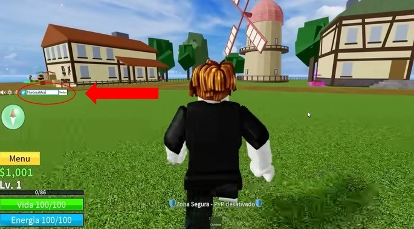

- SECRET_ADMIN - 2x de experiência durante 20 minutos. Novo código!
- ADMIN_TROLL - 2x de experiência durante 20 minutos.
- KITT_RESET - Resgate para uma redefinição de estatísticas gratuita.
- youtuber_shipbattle - 2x de experiência durante 20 minutos.
- STAFFBATTLE - 2x de experiência durante 20 minutos
- ADMIN_STRENGTH - 2x de experiência durante 20 minutos.
- DRAGONABUSE - 2x de experiência durante 20 minutos.
- JULYUPDATE_RESET - Resgate para uma redefinição de estatísticas gratuita.
- 5B_BESTBROTHERS - 2x de experiência durante 60 minutos.
- SUB2CAPTAINMAUI - 2x de experiência durante 20 minutos.
- DEVSCOOKING - 2x de experiência durante 20 minutos
- NOOB_REFUND - Resgate para uma redefinição de estatísticas gratuita.
- ADMINGIVEAWAY - 2x de experiência durante 20 minutos.
- SUB2GAMERROBOT_EXP1 - 2x de experiência durante 30 minutos.
- KITTGAMING - 2x de experiência durante 20 minutos.
- SUB2FER999 - 2x de experiência durante 20 minutos
- ENYU_IS_PRO - 2x de experiência durante 20 minutos.
- MAGICBUS - 2x de experiência durante 20 minutos.
- JCWK - 2x de experiência durante 20 minutos.
- STARCODEHEO - 2x de experiência durante 20 minutos.
- BLUXXY - 2x de experiência durante 20 minutos.
- THEGREATACE - 2x de experiência durante 20 minutos.
- SUB2OFFICIALNOOBIE - 2x de experiência durante 20 minutos.
- STRAWHATMAINE - 2x de experiência durante 20 minutos.
- SUB2NOOBMASTER123 - 2x de experiência durante 20 minutos.
- SUB2DAIGROCK - 2x de experiência durante 20 minutos.
- AXIORE - 2x de experiência durante 20 minutos.
- TANTAIGAMING - 2x de experiência durante 20 minutos.
- SUB2GAMERROBOT_RESET1 - Resgate para uma redefinição de estatísticas gratuita.
- SUB2UNCLEKIZARU - Resgatar código para um reembolso de estatísticas.
- FUDD10_V2 - Resgatar código para 2 moeda Beli
- FUDD10 - Resgatar código para 1 moeda Beli.
- BIGNEWS - Resgatar código para um título no jogo de "Bignews". Você precisa estar no segundo ou terceiro mar.
Como resgatar os códigos no Blox Fruits
Para resgatar os códigos no Blox Fruits, será necessário seguir às três etapas que listamos abaixo:
1. Faça login no Blox Fruits e comece o jogo
A única maneira de resgatar códigos no Blox Fruits é dentro do jogo. Portanto, primeiramente para entrar no jogo, vá para a página Blox Fruits e pressione o botão verde. Depois de um tempo, você entrará no jogo e terá que escolher entre ser da Marinha ou Pirata, a escolha não influencia!
Como resgatar código

3. Insira e ative o código de interesse
Por último, a única coisa que falta fazer é copiar um dos códigos que temos na lista e inseri-lo no slot branco. Depois só clicar no botão tentar e aproveitar as recompensas!
Preste atenção, pois há alguns detalhes a serem observados sobre esses códigos:
Todos os códigos são de uso único. Logo após resgatar um deles, caso o tente inserir novamente, o jogo informará “Já foi resgatado”!
Os códigos podem estar com a letra em maiúscula ou minúsculas. Eles foram colocados aqui na lista com letras maiúsculas para ficar mais claro o entendimento.
Caso haja espaço no início ou no final do código, o Blox Fruits não irá reconhecer o código. Então, tome cuidado para não colocar espaço!
Se você inserir um código incorreto ou expirado, o próprio jogo notificará como “Inválido!”.
Sobre os códigos de experiência, eles são acumulativos. Logo, se você ativar dois códigos de experiência x2 por 20 minutos, você terá 40 minutos de experiência em dobro.